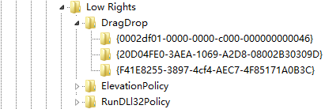
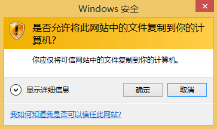
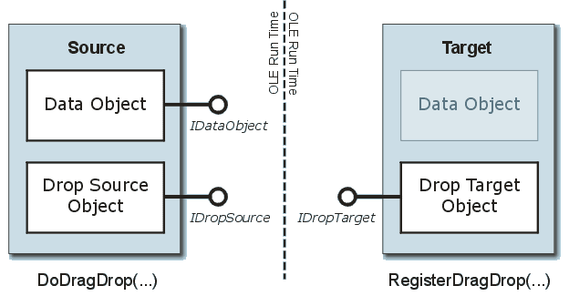

IE沙箱逃逸是IE浏览器安全研究的一个重要课题，其中有一类漏洞会借助ElevationPolicy设置中的白名单程序的缺陷来完成沙箱逃逸。IE在注册表中有一个和ElevationPolicy类似的名为DragDrop策略设置，这引起了我们的注意。在本文中，笔者将以一个攻击者的视角，尝试各种途径来突破IE沙箱的这一安全策略，通过分析所遇到的障碍，达到对IE沙箱拖拽安全策略进行详细解析的目的。
0x01 IE沙箱的拖拽策略
IE沙箱逃逸技术中有一类是利用ElevationPolicy中的白名单程序的问题去执行任意代码，在注册表中，有一个和ElevationPolicy类似的配置，名为DragDrop，具体注册表路径如下：
HKLM\Software\Microsoft\Internet Explorer\Low Rights\DragDrop
如下图所示：

DragDrop Policy值的含义如下：
0：目标窗口是无效的DropTarget，拒绝；
1：目标窗口是有效的DropTarget，但无法复制内容；
2：弹框询问用户，允许后将内容复制到目标窗口；
3：静默允许拖拽。
在一个干净的Windows 8.1系统上，DragDrop目录下默认有三个程序：iexplore.exe, explorer.exe, notepad.exe，它们的Policy值都是3。当目标程序的Policy值为2时，向目标程序窗口拖拽文件，IE会弹出一个提示框，如下图所示：
0x02 Explorer进程的拖拽问题
在从IE往Explorer上拖拽文件时，虽然DragDrop Policy值设置为了3，IE不会弹框，但是Explorer进程会会弹一个提示框，如下图所示：

然而，当我们从IE中向Explorer侧边栏的树形文件夹结构中拖拽文件时，并不会弹框。这应该是Explorer程序实现上的一个疏漏。进一步设想，如果我们能够在IE沙箱中通过程序模拟鼠标的拖拽操作，那么就能够利用Explorer的这个问题跨越IE沙箱的安全边界。
0x03 不使用鼠标完成OLE拖拽
OLE拖拽是一种通用的文件拖拽方式，它采用了OLE的接口设计方法来实现拖拽功能，使得拖拽的实现通用且模块化。OLE拖拽技术包含三个基本接口：
- IDropSource接口：表示拖拽操作的源对象，由源对象实现；
- IDropTarget接口：表示拖拽操作的目标对象，由目标对象实现；
- IDataObject接口：表示拖拽操作中传输的数据，由源对象实现。
下图描述了一个完整的OLE拖拽操作需要实现的关键组件：

我们要模拟鼠标拖拽，则只需要实现IDropSource和IDataObject接口。正常的OLE拖拽操作的核心是调用ole32!DoDragDrop函数，该函数原型如下：1
2
3
4
5
6HRESULT DoDragDrop(
IDataObject *pDataObject, // Pointer to the data object
IDropSource *pDropSource, // Pointer to the source
DWORD dwOKEffect, // Effects allowed by the source
DWORD *pdwEffect // Pointer to effects on the source
);
DoDragDrop的参数中包含了拖拽源对象和拖拽数据的信息，在DoDragDrop函数内部通过鼠标指针位置来获取拖拽目标对象的信息。接下来，笔者给出一种不使用鼠标，而是用代码模拟的方式来完成文件拖拽的方法。
要通过代码模拟鼠标拖拽操作，即要将DoDragDrop函数中GUI操作的部分剥离出来，找出真正执行拖拽操作的函数，将所需要的参数直接传递给它来完成拖拽操作。这里以Win7上的ole32.dll 6.1.7601.18915为例，说明DoDragDrop内部的实现。
Ole32!DoDragDrop的主要逻辑如下：
1 | HRESULT __stdcall DoDragDrop( |
CDragOperation::CDragOperation是构造函数，其中重要的初始化操作包括：
ole32! GetMarshalledInterfaceBuffer
ole32! ClipSetCaptureForDrag
-->ole32!GetPrivateClipboardWindow
ole32! CreateSharedDragFormats
接下来的While循环判断拖拽的状态，最终由CompleteDrop完成拖拽，关键的函数调用如下：
ole32!CDragOperation::UpdateTarget
-->ole32!CDragOperation::GetDropTarget
-->ole32!PrivDragDrop
ole32!CDragOperation::DragOver
-->ole32!CDropTarget::DragOver
-->ole32!PrivDragDrop
ole32!CDragOperation::CompleteDrop
-->ole32!CDropTarget::Drop
-->ole32!PrivDragDrop
可以看到，最终实现拖拽操作的函数是ole32!PrivDragDrop， 通过使用函数偏移硬编码函数地址，可以调用到ole32.dll中的内部函数。我们定义了一个DropData函数来模拟鼠标拖拽，输入参数为目标窗口句柄和被拖拽文件的IDataObject指针，主要逻辑如下：
1 | auto DropData(HWND hwndDropTarget, IDataObject* pDataObject) |
目标窗口句柄可以通过FindWindow函数获得，将被拖拽文件封装成一个DataObject并获得其IDataObject接口指针的方法有两种：
- 自己编写C++类实现IDataObject接口；
- 使用现有类库中的实现，如：MFC, Shell32中均有对拖拽接口实现的相关类。
笔者这里给出使用MFC类库对文件进行封装并获得其IDataObject接口的方法，实现代码如下：
1 | auto GetIDataObjectForFile(CString filePath) |
0x04 IE沙箱的拖拽实现
当我们在IE沙箱中用鼠标进行拖拽操作时，沙箱内的IE Tab进程会通过ShdocvwBroker将数据转发给沙箱外的主进程，在主进程中完成拖拽操作。也就是说，真正完成拖拽操作是在沙箱外的IE主进程内。两个进程的函数调用情况大致如下：
IE子进程（沙箱中）：
MSHTML!CDoc::DoDrag
-->MSHTML!CDragDropManager::DoDrag
-->combase!ObjectStubless
--> … 发送ALPC消息给IE主进程
IE主进程：
… 接收IE子进程发来的ALPC消息
-->RPCRT4!Invoke
-->IEFRAME!CShdocvwBroker::PerformDoDragDrop
-->IEFRAME!CShdocvwBroker::PerformDoDragDropThreadProc
-->ole32!DoDragDrop
0x05 IE沙箱对拖拽操作的安全限制
在IE沙箱中，我们是可以直接调到Broker中的函数的。通过自己创建一个IEUserBroker，再由IEUserBroker创建一个ShdocvwBroker，我们就可以调到主进程中的IEFRAME!CShdocvwBroker::PerformDoDragDrop函数。调用的实现方法大致如下：
1 | typedef HRESULT(__stdcall *ppCoCreateUserBroker)(IIEUserBroker **ppBroker); |
拖拽功能最终是调用ole32!DoDragDrop函数来实现的，DoDragDrop所需的参数都可以由PerformDoDragDrop函数传入（参考0x03章节中DoDragDrop函数的参数信息）。至此，我们已经可以从沙箱内直接走到沙箱外的ole32!DoDragDrop函数，且传入参数可控。而要模拟鼠标拖拽操作，有两个思路：
- 使用0x02章节中所讲的直接调用ole32.dll内部函数的方法；
- 调用API改变鼠标位置。
对于第一种方法，由于我们是在沙箱内，只能通过Broker接口的代理才能从沙箱中出来，进入到IE主进程的进程空间。所以我们并不能调到主进程中dll的内部函数，进而这种方法是不可行的。
第二种方法，如果我们能够改变鼠标的位置，那么在ole32!DoDragDrop函数内部通过鼠标位置获取目标窗口信息的步骤就会成功通过，就能够完成模拟鼠标拖拽的目标。然而实验过程中，我们发现在IE沙箱中是无法通过API来改变鼠标指针位置的。下面来具体说明这个问题。
笔者想到的能够改变鼠标指针位置的方法有两种：
1.通过SendInput函数模拟鼠标动作。SendInput函数从用户态到内核态的函数调用关系如下所示：
User32!SendInput
-->user32!NtUserSendInput
-->win32k.sys!NtUserSendInput
-->win32k.sys!xxxSendInput
-->win32k.sys!xxxMouseEventDirect
2.通过SetCursorPos函数改变鼠标指针位置。SetCursorPos函数从用户态到内核态的函数调用关系如下：
user32!SetCursorPos
-->user32!SetPhysicalCursorPos
-->user32!NtUserCallTwoParam
-->win32k.sys!NtUserCallTwoParam
-->win32k.sys!zzzSetCursorPos
-->win32k.sys!zzzSetCursorPosByType
先来看SendInput，如果在IE沙箱中直接调用SendInput函数来改变鼠标指针位置的话，会返回0x5拒绝访问错误，这是因为IEShims.dll中对SendInput函数做了hook，在hook函数中做了处理。具体做处理的函数位置如下：
IEShims.dll!NS_InputQueueLowMIC::APIHook_SendInput
--> IEFRAME!FrameUtilExports::PreSendInput
--> ShimHelper::PreSendInput
这个hook很容易绕过，我们直接调用NtUserSendInput即可，不过这个函数没有导出，需要通过函数偏移硬编码它的地址。
直接调用NtUserSendInput，该函数不返回错误，但是鼠标指针的位置并没有改变。究其原因，函数调用的失败是由于UIPI( User Interface Privilege Isolation )的限制。调用SetCursorPos函数也会出现相同的情况。
UIPI是从Windows Vista开始系统新加入的一项安全特性，它在Windows内核中实现，具体位置如下：
win32k! CheckAccessForIntegrityLevel
在Win8.1上，这个函数的逻辑如下：
1 | signed int __stdcallCheckAccessForIntegrityLevelEx( |
这个函数首先判断源进程和目标进程的Integrity Level，若源IL小于目标IL，则拒绝；若源IL大于目标IL，则允许。接着判断AppContainer属性，若源和目标的IL相等，且均运行在AppContainer中，则判断二者是否满足SeIsParentOfChildAppContainer函数的约束，满足则允许，否则拒绝。
注：ProcessIntegrityLevel和IsAppContainer参数都是从EPROCESS->Win32Process结构中取出来的，这是一个内部结构。SeIsParentOfChildAppContainer是ntoskrnl中的一个内部函数。
0x06 总结
本文详细解析了IE沙箱对于拖拽操作的安全策略，先后分析了IE沙箱的拖拽限制策略、Explorer进程在拖拽限制上存在的问题、ole32.dll实现拖拽的内部原理、IE在沙箱中实现拖拽操作的原理和IE沙箱对拖拽操作进行安全限制的具体位置和实现细节。IE沙箱通过在IEShims.dll中hook特定函数和借助系统的UIPI特性（Windows Vista以上）对拖拽操作进行了有效的安全限制。
参考资料
[1] Understanding and Working in Protected Mode Internet Explorer https://msdn.microsoft.com/en-us/library/bb250462
[2] OLE Drag and Drop http://www.catch22.net/tuts/ole-drag-and-drop
[3] How to Implement Drag and Drop between Your Program and Explorer http://www.codeproject.com/Articles/840/How-to-Implement-Drag-and-Drop-Between-Your-Progra
[4] WINDOWS VISTA UIPI https://www.coseinc.com/en/index.php?rt=download&act=publication&file=Vista_UIPI.ppt.pdf
致谢
感谢Wins0n在ole32逆向上的帮助；
感谢FlowerCode在思路和技术难点上的指点。